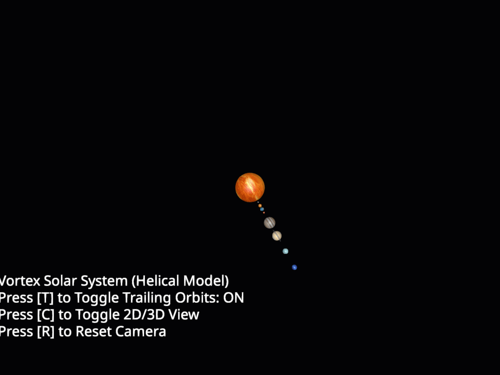

Note
Go to the end to download the full example code.
Vortex (Helical) Solar System Model#
In this tutorial, we will create a vortex (helical) animation of the solar system. In the actual universe, the Sun is not stationary, it travels through the Milky Way galaxy at a high speed. This causes the planets to trace out beautiful 3D helical/corkscrew trajectories (vortexes) through space rather than closed, static ellipses.
import numpy as np
from scipy.spatial.transform import Rotation as Rot
from fury import actor, window
from fury.primitive import prim_sphere
from fury.ui import PlaybackPanel, TextBlock2D
from fury.data import fetch_viz_textures, read_viz_textures
from fury.lib import EventType
Create a scene to start.
scene = window.Scene(background=(0.01, 0.01, 0.02))
Define information relevant for each planet actor including its texture name, relative orbital position, and scale. We also add a custom color for the trailing helical orbit to match the planet’s visual aesthetic.
planets_data = [
{
"filename": "8k_mercury.jpg",
"position": 8,
"earth_days": 58.0,
"scale": (0.3, 0.3, 0.3),
"trail_color": (0.6, 0.6, 0.6), # Gray
},
{
"filename": "8k_venus_surface.jpg",
"position": 10,
"earth_days": 243.0,
"scale": (0.76, 0.76, 0.76),
"trail_color": (0.8, 0.6, 0.4), # Bronze
},
{
"filename": "1_earth_8k.jpg",
"position": 12,
"earth_days": 1.0,
"scale": (0.8, 0.8, 0.8),
"trail_color": (0.2, 0.6, 1.0), # Sky blue
},
{
"filename": "8k_mars.jpg",
"position": 14,
"earth_days": 1.03,
"scale": (0.42, 0.42, 0.42),
"trail_color": (0.9, 0.3, 0.2), # Red
},
{
"filename": "jupiter.jpg",
"position": 20,
"earth_days": 0.41,
"scale": (2.5, 2.5, 2.5),
"trail_color": (0.8, 0.5, 0.3), # Brownish orange
},
{
"filename": "8k_saturn.jpg",
"position": 28,
"earth_days": 0.45,
"scale": (2.1, 2.1, 2.1),
"trail_color": (0.9, 0.8, 0.5), # Yellow
},
{
"filename": "8k_saturn_ring_alpha.png",
"position": 28,
"earth_days": 0.45,
"scale": (3.15, 0.5, 3.15),
"trail_color": (0.9, 0.8, 0.5),
},
{
"filename": "2k_uranus.jpg",
"position": 38,
"earth_days": 0.72,
"scale": (1.3, 1.3, 1.3),
"trail_color": (0.4, 0.8, 0.8), # Cyan
},
{
"filename": "2k_neptune.jpg",
"position": 49,
"earth_days": 0.67,
"scale": (1.25, 1.25, 1.25),
"trail_color": (0.2, 0.4, 0.9), # Deep blue
},
{
"filename": "8k_sun.jpg",
"position": 0,
"earth_days": 27.0,
"scale": (6.0, 6.0, 6.0),
"trail_color": (1.0, 0.7, 0.1), # Glowing gold/orange
},
]
fetch_viz_textures()
Dataset is already in place. If you want to fetch it again please first remove the folder /home/runner/.fury/textures
({'1_earth_8k.jpg': ('https://raw.githubusercontent.com/fury-gl/fury-data/master/textures/1_earth_8k.jpg', '0D66DC62768C43D763D3288CE67128AAED27715B11B0529162DC4117F710E26F'), '2_no_clouds_8k.jpg': ('https://raw.githubusercontent.com/fury-gl/fury-data/master/textures/2_no_clouds_8k.jpg', '5CF740C72287AF7B3ACCF080C3951944ADCB1617083B918537D08CBD9F2C5465'), '5_night_8k.jpg': ('https://raw.githubusercontent.com/fury-gl/fury-data/master/textures/5_night_8k.jpg', 'DF443F3E20C7724803690A350D9F6FDB36AD8EBC011B0345FB519A8B321F680A'), 'earth.ppm': ('https://raw.githubusercontent.com/fury-gl/fury-data/master/textures/earth.ppm', '34CE9AD183D7C7B11E2F682D7EBB84C803E661BE09E01ADB887175AE60C58156'), 'jupiter.jpg': ('https://raw.githubusercontent.com/fury-gl/fury-data/master/textures/jupiter.jpg', '5DF6A384E407BD0D5F18176B7DB96AAE1EEA3CFCFE570DDCE0D34B4F0E493668'), 'masonry.bmp': ('https://raw.githubusercontent.com/fury-gl/fury-data/master/textures/masonry.bmp', '045E30B2ABFEAE6318C2CF955040C4A37E6DE595ACE809CE6766D397C0EE205D'), 'moon-8k.jpg': ('https://raw.githubusercontent.com/fury-gl/fury-data/master/textures/moon_8k.jpg', '7397A6C2CE0348E148C66EBEFE078467DDB9D0370FF5E63434D0451477624839'), '8k_mercury.jpg': ('https://raw.githubusercontent.com/fury-gl/fury-data/master/textures/8k_mercury.jpg', '5C8BD885AE3571C6BA2CD34B3446B9C6D767E314BF0EE8C1D5C147CADD388FC3'), '8k_venus_surface.jpg': ('https://raw.githubusercontent.com/fury-gl/fury-data/master/textures/8k_venus_surface.jpg', '9BC21A50577ED8AC734CDA91058724C7A741C19427AA276224CE349351432C5B'), '8k_mars.jpg': ('https://raw.githubusercontent.com/fury-gl/fury-data/master/textures/8k_mars.jpg', '4CC52149924ABC6AE507D63032F994E1D42A55CB82C09E002D1A567FF66C23EE'), '8k_saturn.jpg': ('https://raw.githubusercontent.com/fury-gl/fury-data/master/textures/8k_saturn.jpg', '0D39A4A490C87C3EDABE00A3881A29BB3418364178C79C534FE0986E97E09853'), '8k_saturn_ring_alpha.png': ('https://raw.githubusercontent.com/fury-gl/fury-data/master/textures/8k_saturn_ring_alpha.png', 'F1F826933C9FF87D64ECF0518D6256B8ED990B003722794F67E96E3D2B876AE4'), '2k_uranus.jpg': ('https://raw.githubusercontent.com/fury-gl/fury-data/master/textures/2k_uranus.jpg', 'D15239D46F82D3EA13D2B260B5B29B2A382F42F2916DAE0694D0387B1204A09D'), '2k_neptune.jpg': ('https://raw.githubusercontent.com/fury-gl/fury-data/master/textures/2k_neptune.jpg', 'CB42EA82709741D28B0AF44D8B283CBC6DBD0C521A7F0E1E1E010ADE00977DF6'), '8k_sun.jpg': ('https://raw.githubusercontent.com/fury-gl/fury-data/master/textures/8k_sun.jpg', 'F22B1CFB306DDCE72A7E3B628668A0175B745038CE6268557CB2F7F1BDF98B9D'), '1_earth_16k.jpg': ('https://raw.githubusercontent.com/fury-gl/fury-data/master/textures/1_earth_16k.jpg', '7DD1DAC926101B5D7B7F2E952E53ACF209421B5CCE57C03168BCE0AAD675998A'), 'clouds.jpg': ('https://raw.githubusercontent.com/fury-gl/fury-data/master/textures/clouds.jpg', '85043336E023C4C9394CFD6D48D257A5564B4F895BFCEC01C70E4898CC77F003')}, '/home/runner/.fury/textures')
Function to load textures and build planet sphere actors.
def make_textured_sphere(planet_file, scale, position=None):
verts, faces = prim_sphere(phi=60, theta=60)
norms = np.linalg.norm(verts, axis=1, keepdims=True)
norms[norms == 0] = 1.0
normalized = verts / norms
x = normalized[:, 0]
y = normalized[:, 1]
z = normalized[:, 2]
# Mercator texture projection
u = np.arctan2(x, z) / (2.0 * np.pi) + 0.5
v = 0.5 - np.arcsin(y) / np.pi
uvs = np.column_stack((u, v))
planet_actor = actor.surface(verts, faces, texture=planet_file, texture_coords=uvs)
planet_actor.local.scale = scale
if position is not None:
planet_actor.local.position = position
return planet_actor
Initialize all planet actors.
planets = []
for p_data in planets_data:
filename = p_data["filename"]
pos = p_data["position"]
earth_days = p_data["earth_days"]
scale = p_data["scale"]
trail_color = p_data["trail_color"]
planet_file = read_viz_textures(filename)
initial_pos = [float(pos), 0.0, 0.0]
actor_obj = make_textured_sphere(planet_file, scale, position=initial_pos)
scene.add(actor_obj)
is_ring = "saturn_ring" in filename
is_sun = "sun" in filename
p_info = {
"filename": filename,
"actor": actor_obj,
"radius": float(pos),
"earth_days": float(earth_days),
"is_ring": is_ring,
"is_sun": is_sun,
"trail_color": trail_color,
}
planets.append(p_info)
sun_info = next(p for p in planets if p["is_sun"])
Physics of the Helical/Vortex Orbit: Gravity constant G and central mass of the Sun.
g_exponent = np.float_power(10, -11)
g_constant = 6.673 * g_exponent
m_exponent = 1073741824
m_constant = 1.989 * m_exponent
miu = m_constant * g_constant
# Unit travel direction and velocity vector of the Sun through space
u_vec = np.array([0.25, 0.12, -0.05])
v_sun = np.linalg.norm(u_vec)
u_hat = u_vec / v_sun
# Determine two perpendicular unit vectors p_hat and q_hat defining the orbital plane
if abs(u_hat[2]) < 0.9:
p_vec = np.cross(u_hat, np.array([0.0, 0.0, 1.0]))
else:
p_vec = np.cross(u_hat, np.array([1.0, 0.0, 0.0]))
p_hat = p_vec / np.linalg.norm(p_vec)
q_hat = np.cross(u_hat, p_hat)
R_align_mat = np.column_stack((p_hat, u_hat, -q_hat))
R_align = Rot.from_matrix(R_align_mat)
def get_orbit_period(radius):
if radius == 0.0:
return 1.0
return 2.0 * np.pi * np.sqrt(np.power(radius, 3) / miu)
def get_relative_position(p_info, t):
"""Compute the position relative to the Sun at time t."""
if p_info["is_sun"]:
return np.array([0.0, 0.0, 0.0])
orbit_period = get_orbit_period(p_info["radius"])
theta = -2.0 * np.pi * t / orbit_period
# Calculate relative position in the perpendicular orbital plane
pos_orbit = p_info["radius"] * (np.cos(theta) * p_hat + np.sin(theta) * q_hat)
return pos_orbit
State management dictionary.
state = {
"current_time": 0.0,
"rotation_speed": 1.0,
"show_trails": True,
"orbit_actor": None,
"camera_mode": "cinematic",
}
def update_planet_transforms(p_info, t):
actor_obj = p_info["actor"]
if p_info["is_sun"]:
angle_axial = (50.0 / p_info["earth_days"]) * t
R_axial = Rot.from_euler("y", angle_axial, degrees=True)
actor_obj.local.rotation = (R_align * R_axial).as_quat()
actor_obj.local.position = get_relative_position(p_info, t)
else:
pos = get_relative_position(p_info, t)
actor_obj.local.position = pos
if not p_info["is_ring"]:
angle_axial = (50.0 / p_info["earth_days"]) * t
R_axial = Rot.from_euler("y", angle_axial, degrees=True)
actor_obj.local.rotation = (R_align * R_axial).as_quat()
else:
actor_obj.local.rotation = R_align.as_quat()
def update_helical_trails(t):
"""Draw trailing helical corkscrew trails for all bodies in the scene."""
global scene
if state["orbit_actor"] is not None:
scene.remove(state["orbit_actor"])
state["orbit_actor"] = None
if not state["show_trails"]:
return
all_tracks = []
all_colors = []
trail_length = 1000.0
start_t = max(0.0, t - trail_length)
if t <= 1.0:
return
for p in planets:
track_points = []
for s in np.linspace(start_t, t, 150):
pos_orbit = get_relative_position(p, s)
drawn_pos = pos_orbit - u_vec * (t - s)
track_points.append(drawn_pos)
all_tracks.append(np.array(track_points))
all_colors.append(p["trail_color"])
trail_actor = actor.line(all_tracks, colors=all_colors)
trail_actor.local.position = (0.0, 0.0, 0.0)
scene.add(trail_actor)
state["orbit_actor"] = trail_actor
Initialize UI and HUD.
hud_text = TextBlock2D(
text="Vortex Solar System (Helical Model)\n"
"Press [T] to Toggle Trailing Orbits: ON\n"
"Press [C] to Toggle 2D/3D View\n"
"Press [R] to Reset Camera",
position=(50, 650),
font_size=18,
color=(1.0, 1.0, 1.0),
dynamic_bbox=True,
)
scene.add(hud_text)
playback_ui = PlaybackPanel(position=(50, 50), width=700, loop=True)
playback_ui.final_time = 10000.0
scene.add(playback_ui)
Set up camera and follow behavior.
showm = window.ShowManager(
scene=scene, size=(900, 768), title="FURY Vortex Solar System Animation"
)
camera = showm.screens[0].camera
camera.local.position = np.array([-30.0, 75.0, 142.5])
camera.look_at((0.0, 0.0, 0.0))
Interactive events and keyboard controls.
def handle_key_event(event):
if event.key.lower() == "t":
state["show_trails"] = not state["show_trails"]
status = "ON" if state["show_trails"] else "OFF"
hud_text.message = (
"Vortex Solar System (Helical Model)\n"
f"Press [T] to Toggle Trailing Orbits: {status}\n"
"Press [C] to Toggle 2D/3D View\n"
"Press [R] to Reset Camera"
)
update_helical_trails(state["current_time"])
showm.render()
elif event.key.lower() == "c":
if state["camera_mode"] == "cinematic":
state["camera_mode"] = "top_down"
camera.local.position = u_vec * 150.0
camera.look_at((0.0, 0.0, 0.0))
else:
state["camera_mode"] = "cinematic"
camera.local.position = np.array([-30.0, 75.0, 142.5])
camera.look_at((0.0, 0.0, 0.0))
controller = showm.screens[0].controller
if hasattr(controller, "target"):
controller.target = np.array([0.0, 0.0, 0.0])
showm.render()
elif event.key.lower() == "r":
if state["camera_mode"] == "cinematic":
camera.local.position = np.array([-30.0, 75.0, 142.5])
else:
camera.local.position = u_vec * 150.0
camera.look_at((0.0, 0.0, 0.0))
controller = showm.screens[0].controller
if hasattr(controller, "target"):
controller.target = np.array([0.0, 0.0, 0.0])
showm.render()
showm.renderer.add_event_handler(handle_key_event, EventType.KEY_UP)
<function handle_key_event at 0x7fe94be3ae80>
Callback functions for ShowManager progress synchronization.
def on_progress_changed(t):
state["current_time"] = t
for p in planets:
update_planet_transforms(p, t)
update_helical_trails(t)
def on_speed_changed(s):
state["rotation_speed"] = s
playback_ui.on_progress_bar_changed = on_progress_changed
playback_ui.on_speed_changed = on_speed_changed
def update_playback_logic(show_manager_obj=None):
if playback_ui._playing:
step = 1.0 * state["rotation_speed"]
state["current_time"] += step
if state["current_time"] > playback_ui.final_time:
if playback_ui._loop:
state["current_time"] = 0.0
else:
state["current_time"] = playback_ui.final_time
playback_ui.pause()
playback_ui.current_time = state["current_time"]
on_progress_changed(state["current_time"])
showm.register_callback(update_playback_logic, 0.01, True, "PlaybackSync", showm)
on_progress_changed(0.0)
Start the interactive simulation window.
if __name__ == "__main__":
showm.start()

Total running time of the script: (0 minutes 30.047 seconds)